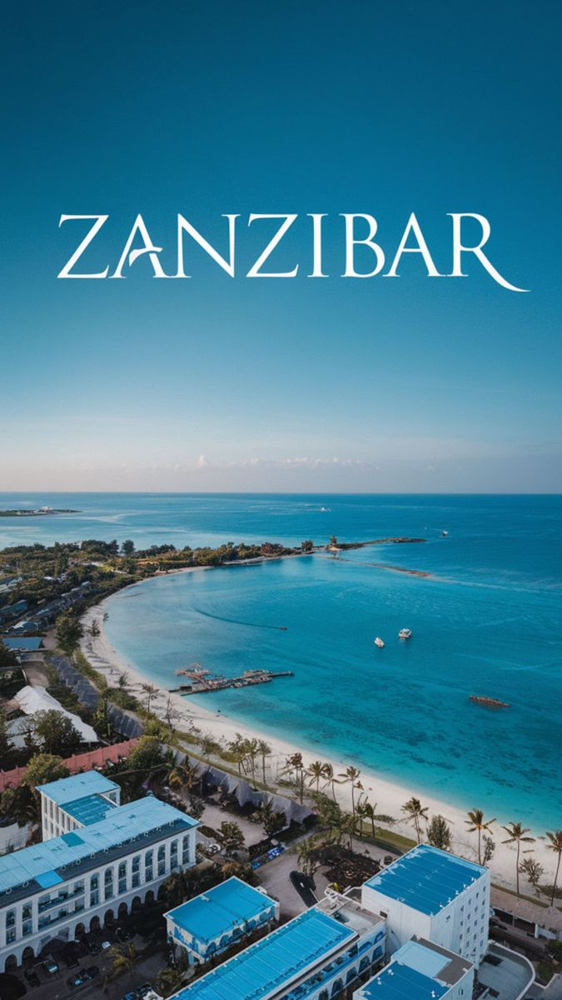
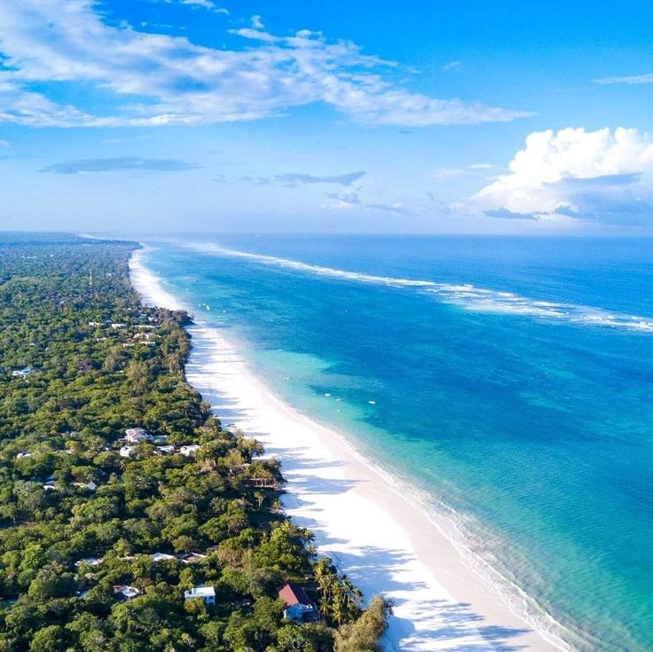
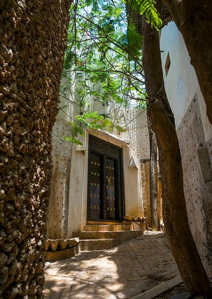
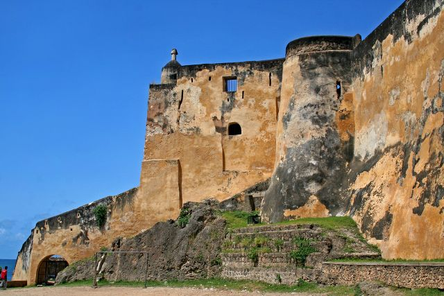
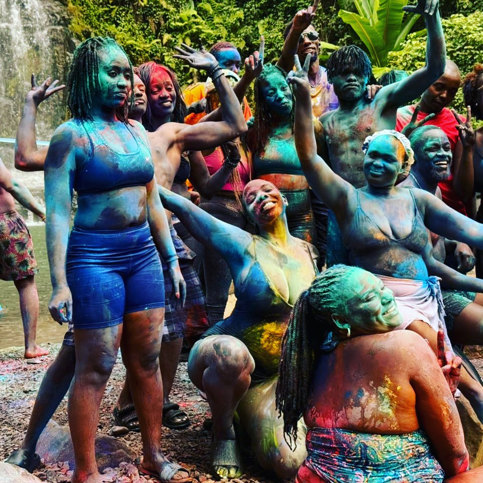
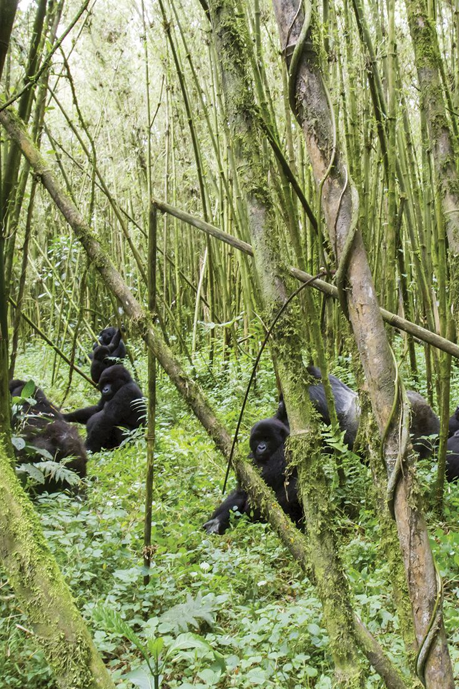

Island Escape
Stone Town atmosphere and turquoise water at the edge of the next crossing.
Gallery
These frames capture the spirit of Beyond Borders: shared departures, open-road discovery, coastal light, and the people who make each trip memorable.
Exhibition
A quiet exhibition of curated travel moments from Kenya, Zanzibar, and the journeys that connect them.





